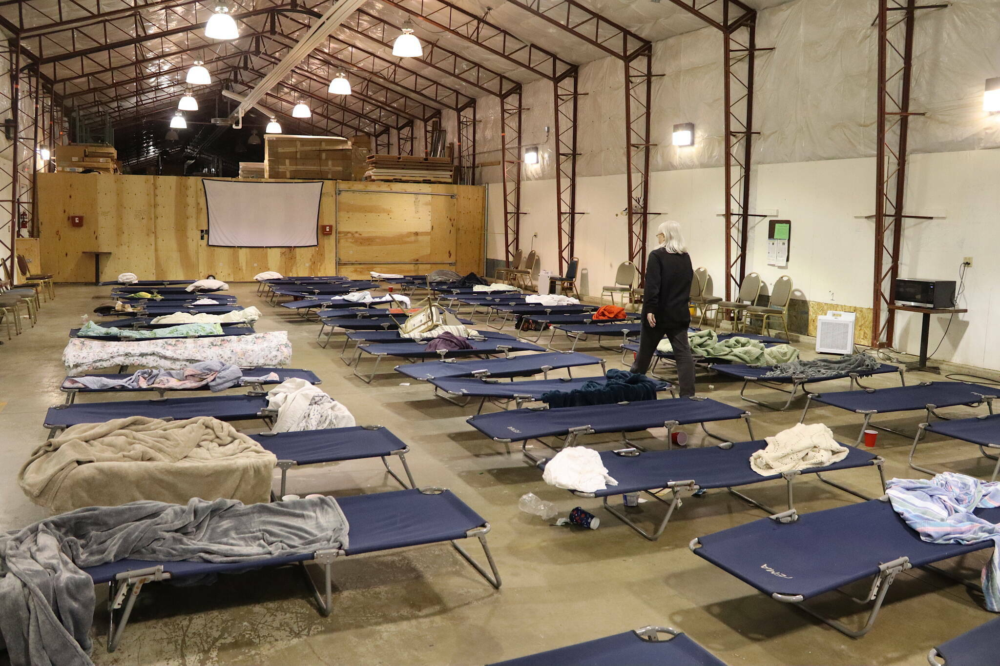
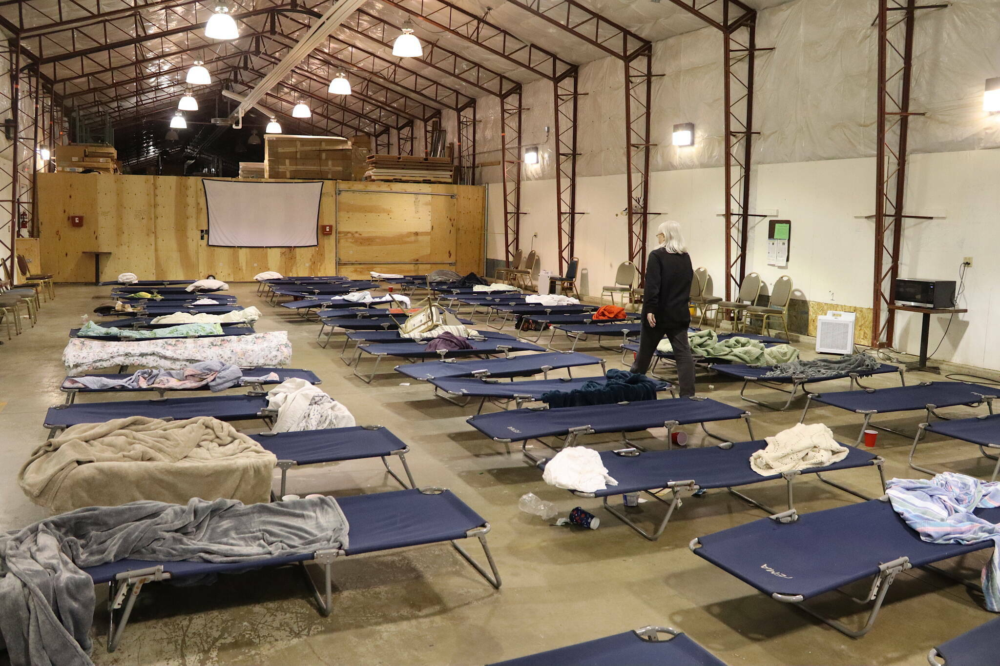

Food Banks and Pantries
- Calvary Baptist Church - Open on 3rd Thursdays.
- Durham Community Food Pantry - Open Wednesday, 10:00 am - 1:00 pm, and Thursday, 10:00 am - 1:00 pm and 5:00 pm - 7:00 pm.
- Durham First Assembly of God Food Distribution Center - Open every Thursday, 6:00 pm - 7:00 pm.
- Durham Rescue Mission - Open daily for emergency food services, 9:00 am - 6:00 pm.
- Durham Tech Campus Harvest Food Pantry - Open Monday to Friday, 9:00 am - 4:00 pm during school hours.
- Feed My Sheep of Durham Food Distribution Center - Open Wednesday, 1:00 pm - 3:00 pm.
- Fisher Memorial United Holy Church Food Distribution Center - Open every 2nd Saturday, 10:00 am - 12:00 pm.
- Food Bank of Central & Eastern North Carolina at Durham - Open Monday to Friday, 8:00 am - 4:30 pm.
- Good Work Inc. Food Distribution Center - Open Monday to Friday, 8:30 am - 4:30 pm.
- Immanuel Temple SDA Community Service Food Distribution Center - Open every 2nd and 4th Sunday, 1:00 pm - 3:00 pm.
- Mt Calvary United Church of Christ - Call for more information.
- Meals On Wheels of Durham Inc. Food Distribution Center - Open Monday to Friday, meal deliveries from 10:00 am - 1:00 pm.
- Oak Grove UA Free Will Baptist Church, Inc. Food Distribution Center - Open every 3rd Saturday, 10:00 am - 12:00 pm.
- Russell Memorial CME Church Food Distribution Center - Open every 2nd and 4th Saturday, 9:00 am - 11:00 am.
- Salvation Army of Durham Food Distribution Center - Open Monday, Wednesday, and Friday, 9:00 am - 12:00 pm.
- Southside Church of Christ C.O.S.T. Food Distribution Center - Open every Saturday, 10:00 am - 12:00 pm.
- Two Fish - Five Loaves - Open on 2nd and 4th Thursdays.
- Urban Ministries of Durham - Open daily, 7:30 am - 5:00 pm for emergency needs.
- Walltown Neighborhood Ministries Food Bank - Hours vary; contact for information.
Shelters - Rated Places to Stay
- Durham Housing Authority - Provides affordable housing options and support services for low-income families and individuals.
- Durham Rescue Mission - Comprehensive shelter and community programs.
- Families Moving Forward - Shelter and services for families with children.
- Housing for New Hope - Offers stable housing and support programs.
- Open Table Ministry - Support and resources for the unsheltered.
- Urban Ministries of Durham - Provides shelter and supportive services.
Other Resources
- Durham Crisis Response Center - Support for domestic violence survivors.
- Durham County Department of Public Health - Offers health services, education, and support for individuals and families in need.
- Durham Technical Community College - Education and job training.
- CAARE Inc. - Health care, job placement, and more.
- Lincoln Community Health Center - Medical care and mental health services.
- Project Access of Durham Co. - Connects uninsured individuals to donated medical care and provides case management services.
- Summit Environment Resource Inc - Provides sustainable solutions and support for environmental challenges and resource management.